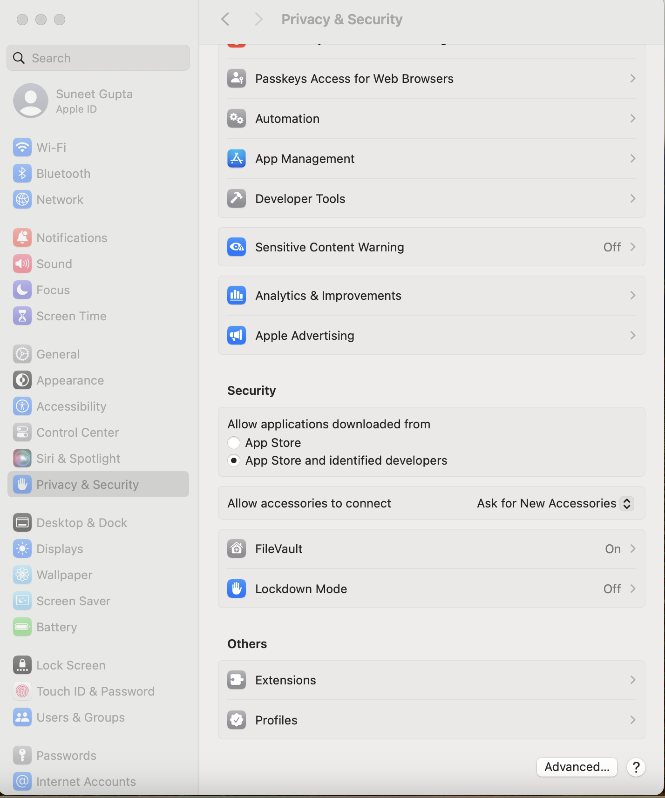
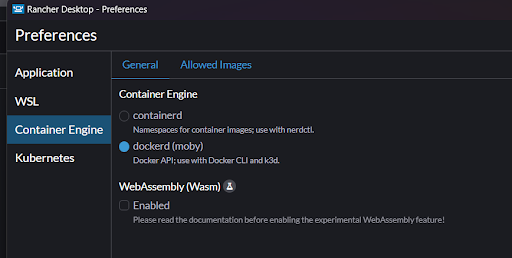
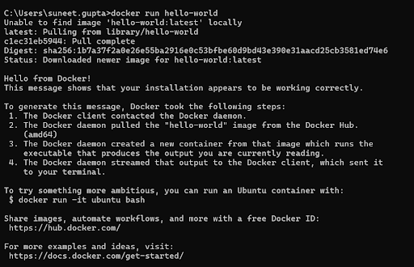
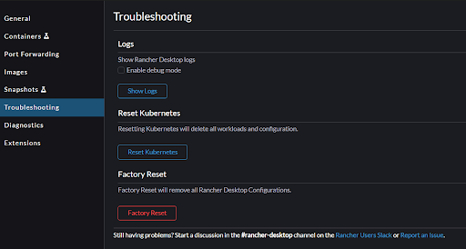
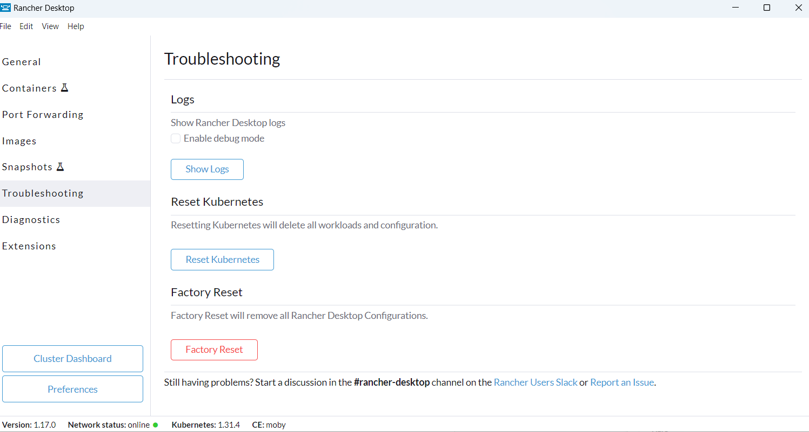
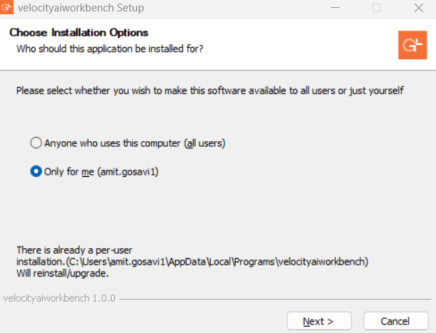
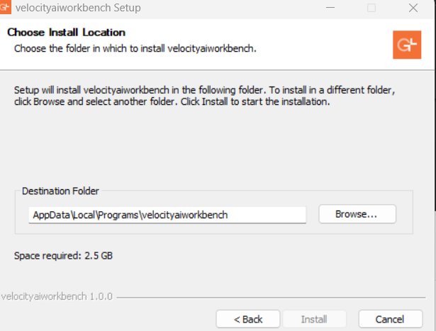
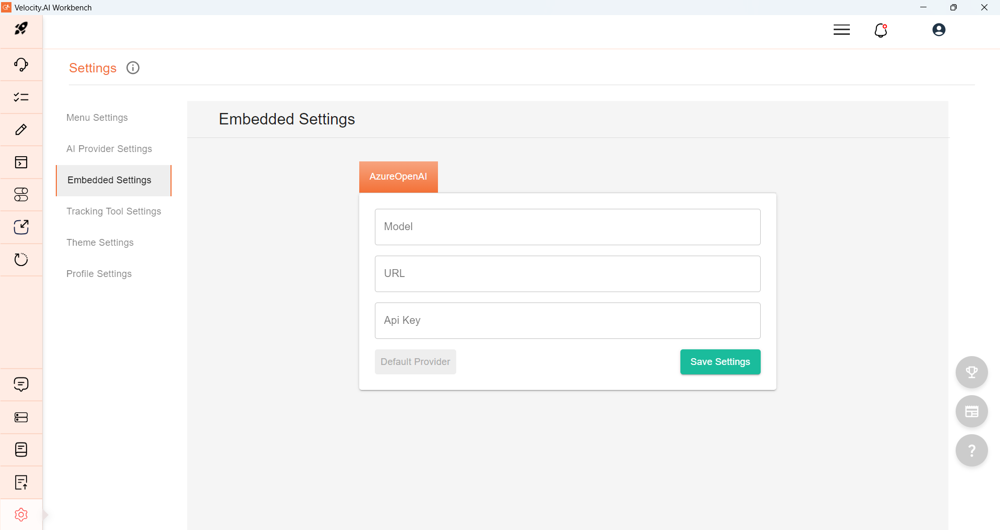

Table of Contents
- Introduction
- Key Features of Velocity AI Workbench
- Generate Requirements
- Generate Diagrams
- CodeBuddy Real-Time Coding Assistance
- AI-Powered Chat Ecosystem
- Knowledge Hub
- Prompt Library
- Integration with AI Providers
- How Velocity AI Workbench Enhances the SDLC
- How to Install Velocity AI Workbench
- Rancher Desktop Settings and Troubleshooting Steps
- Velocity AI WorkBench Installation Steps
- Setting up AI Providers
Velocity AI Workbench is a next-generation AI platform that transforms how software development teams operate. By automating critical aspects of the software development lifecycle (SDLC) and enhancing productivity through advanced AI capabilities, Velocity AI Workbench empowers teams to achieve unprecedented efficiency and quality in application development.
Key Features of Velocity AI Workbench
Generate Requirements
[Back to Table of Contents]- Enables teams to generate detailed, actionable requirements collaboratively.
- Seamlessly integrates with tools like Jira for workflow management.
- Supports the creation of user stories, functional, and non-functional requirements.
- Directly integrates requirements into Jira for smooth planning and execution.
- Ensures efficient task management and collaboration.
Generate Diagrams
[Back to Table of Contents]- The AI-Powered Architectural Diagram Generation in Velocity AI Workbench leverages advanced AI capabilities to automatically generate a wide range of architectural diagrams based on the provided descriptions, code, or requirement documents.
- This feature supports various types of diagrams, including class, sequence, state, user journey, flow chart, use cases, activity, component, deployment, and state diagrams.
- Automating the diagram generation process saves significant time and effort, allowing development teams to focus on core development tasks.
- Automatically generated diagrams can be easily integrated into project documentation, ensuring comprehensive and up-to-date documentation.
- The ability to quickly generate and update diagrams supports agile development practices, enabling rapid iterations and continuous improvement.
CodeBuddy -Real-Time Coding Assistance
[Back to Table of Contents]- The Real-Time Coding Assistance -CodeBuddy in Velocity AI WorkBench leverages advanced AI capabilities to provide developers with intelligent code suggestions based on given prompts.
- CodeBuddy helps developers by generating code snippets, completing code, and offering relevant suggestions as they type.
- It supports multiple programming languages and frameworks, making it a versatile tool for developers working on diverse projects.
- By understanding the context of the code, it can offer context-aware suggestions that enhance productivity and reduce the time spent on boilerplate code.
- The real-time assistance helps in maintaining coding standards and best practices, ensuring high-quality code output.
- Developers can focus more on solving complex problems and less on writing repetitive code, thereby accelerating the development process.
AI-Powered Chat Ecosystem
[Back to Table of Contents]- The AI-Powered Chat in Velocity AI Workbench allows users to engage in real-time conversations for any queries or questions they may have.
- Knowledge Hub Chat supports intelligent search capabilities, enabling users to search for document embeddings of uploaded documents and retrieve relevant information from those documents.
- By leveraging advanced natural language processing (NLP) techniques, the chat system can understand and respond to user queries accurately and efficiently.
- Users can quickly find answers and solutions without having to manually sift through extensive documentation, saving time and effort.
- It also supports continuous learning and improvement by providing instant access to up-to-date information and resources.
Knowledge Hub
[Back to Table of Contents]- The Knowledge Hub in Velocity AI WorkBench allows users to upload documents directly into the platform. Currently, it supports only PDF files. These documents are stored on user's local system.
- Once uploaded, embeddings are generated for the text content of these PDF documents, enabling advanced search capabilities within the AI-Powered Chat feature.
- These embeddings capture the semantic meaning of the document content, allowing users to search and retrieve relevant information efficiently.
- Note that embeddings are generated only for the text content and not for any images within the PDF documents.
- By integrating document embeddings with the chat system, users can quickly access specific information from their documents without manual searching.
- The Knowledge Hub enhances the overall productivity and knowledge management within the development environment.
Prompt Library
[Back to Table of Contents]- The Prompt Library in Velocity AI Workbench allows users to create predefined prompts that can be used to generate specific queries or commands.
- These prompts are designed to help users quickly and easily send predefined queries within the AI-Powered Chat feature.
- By using the Prompt Library, users can save time and effort in formulating queries, ensuring consistent and accurate communication with the AI system.
- This feature improves efficiency and productivity by streamlining the process of interacting with the AI system.
Integration with AI Providers
[Back to Table of Contents]- Velocity AI Workbench allows users to leverage multiple AI providers for their development needs.
- Currently, it supports Azure OpenAI Service, OpenAI AI, and locally deployed Ollama models.
- This flexibility enables users to choose the AI provider that best fits their requirements and preferences.
- By integrating with these AI providers, Velocity AI Workbench ensures access to cutting-edge AI capabilities and models.
- Users can seamlessly switch between different AI providers based on their project needs, ensuring optimal performance and results.
- This feature enhances the versatility and adaptability of the platform, making it suitable for a wide range of AI-driven development tasks.
How Velocity AI WorkBench Enhances the SDLC
[Back to Table of Contents]- Velocity AI WorkBench streamlines the Software Development Life Cycle (SDLC) by providing advanced tools and features that enhance productivity and collaboration.
- With real-time coding assistance, developers can receive intelligent code suggestions, reducing the time spent on writing boilerplate code and minimizing errors.
- The automated architectural diagram generation feature saves significant time in creating and updating diagrams, ensuring comprehensive and up-to-date project documentation.
- AI-powered chat and document search capabilities enable quick access to relevant information, improving decision-making and problem-solving efficiency.
- The Knowledge Hub allows efficient knowledge management, ensuring that critical information is easily accessible.
- Integration with multiple AI providers offers flexibility and access to the latest AI models, enhancing the overall development process.
- These features collectively support agile development practices, enabling rapid iterations, continuous improvement, and faster delivery of high-quality software.
How to Install Velocity AI Workbench
[Back to Table of Contents]Prerequisite
You will need admin access to install the package or need to take help from the IT team for installation.
Windows Installation Steps
[Back to Table of Contents]- Download Rancher Desktop from the official website
- Install Rancher Desktop. Please remember you will either require admin access or support from IT team for this.
- Choose the installation directory and click on Install.
- Verify Rancher Desktop is successfully installed. Please check troubleshooting section. [Troubleshooting steps]
- Wait for the installation to complete.
- Launch the Rancher Desktop
- Wait for the Rancher Desktop to be loaded
Mac Installation Steps
[Back to Table of Contents]- Download Rancher Desktop from the official website
- Open Settings, select privacy and security from left pane, under security section, Allow applications downloaded from, select App Store and identified developers.
- Install Rancher Desktop. Please remember you will either require admin access or support from IT team for this.
- Verify Rancher Desktop is successfully installed. Please check troubleshooting section. [Troubleshooting steps]
- Launch the Rancher Desktop
- Wait for the Rancher Desktop to be loaded

Rancher Desktop Settings and Troubleshooting Steps
[Back to Table of Contents]- Click on preferences
- Select Container Engine
- Select dockerd(moby) - if not selected by default
- Click on Apply
- Open command prompt and execute command -
docker run hello-world - If rancher-desktop is not starting successfully, try with Factory Reset under Troubleshooting section. This will reinitialize all the containers.

Mac

Windows
This will download the sample image (hello-world) from docker hub if it already doesn’t exist and run the container. You can see the image and container running in rancher-desktop.


Mac

Windows
Velocity AI WorkBench Installation Steps
[Back to Table of Contents]- Download the Velocity AI Workbench package from the Google Drive.
- Run the executable file to start the installation process.
- Follow the on-screen instructions to complete the installation.
- Launch the Velocity AI Workbench application after installation.

Select User

Select Folder
Setting up AI Providers
[Back to Table of Contents]- Launch Velocity AI Workbench and select the Settings icon.
- Navigate to the AI Provider Settings section.
- Provide your AI provider details, which could be from Azure OpenAI, OpenAI, or a locally deployed Ollama model.
- Click on Save Settings to apply the changes.
- Set up Embeddings Settings section. Currently, embeddings are supported only through Azure OpenAI.
AI Provider Settings

Embedded Settings